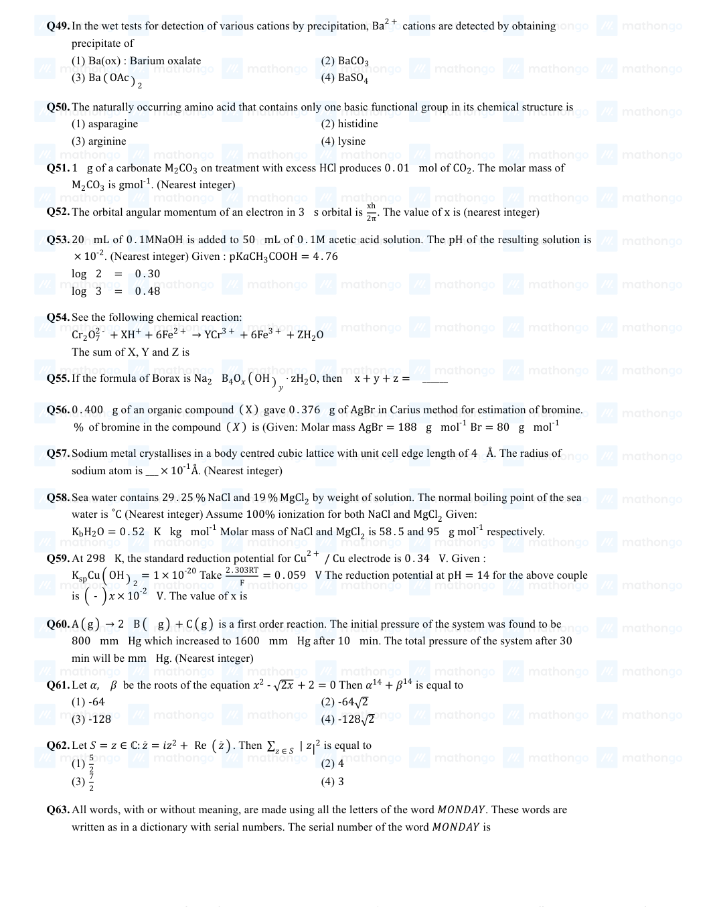
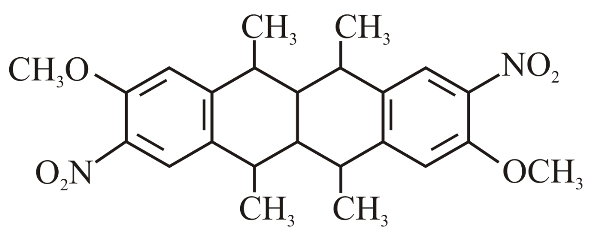
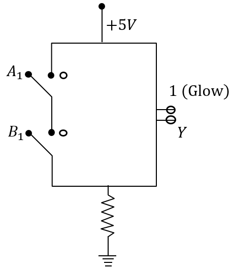
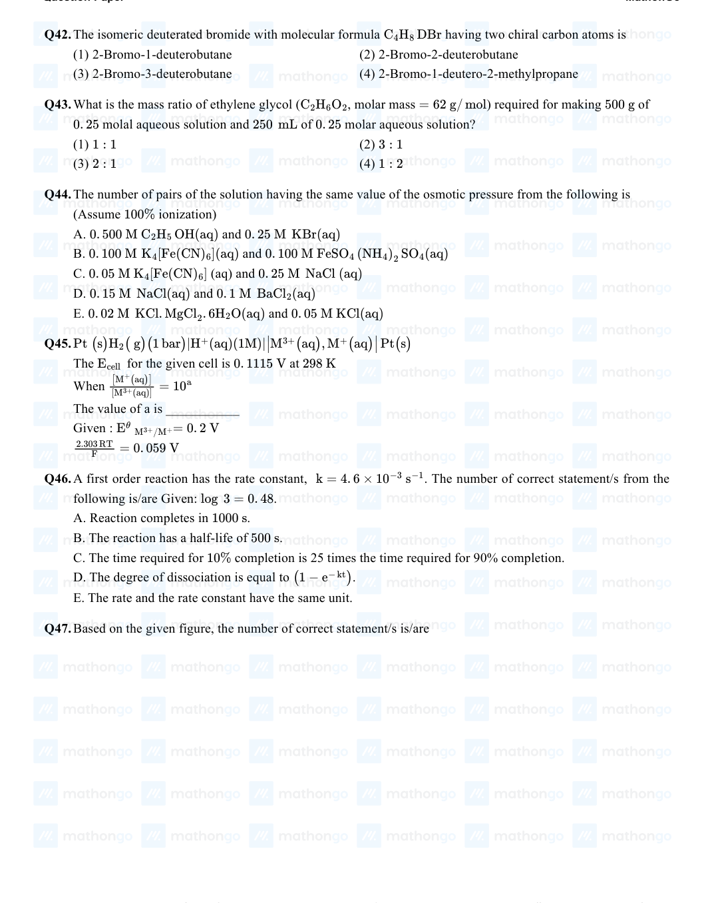

Filter questions
Q1
CHEM-2021-0101-S2-Q039
2021 | 16 Mar | Shift 2
—
MCQ
The INCORRECT statements below regarding colloidal solutions is:
Answer: B
Q2
CHEM-2021-0101-S1-Q053
2021 | 18 Mar | Shift 1
—
Integer
AX is a covalent diatomic molecule where A and X are second row elements of periodic table. Based on Molecular orbital theory, the bond order of is The total number of electrons in is_____. (Round AX 2. 5. AX off to the Nearest Integer).
Answer: 15
Q3
CHEM-2021-0101-S2-Q035
2021 | 18 Mar | Shift 2
—
MCQ
Match list-I with list-II:
Answer: B
Q4
CHEM-2021-0101-S1-Q033
2021 | 25 Feb | Shift 1
—
MCQ
According to molecular orbital theory, the species among the following that does not exist is:
Answer: D
Q5
CHEM-2021-0101-S2-Q033
2021 | 25 Jul | Shift 2
—
MCQ
In the following the correct bond order sequence is:
Answer: C
Q6
CHEM-2021-0101-S2-Q052
2021 | 25 Jul | Shift 2
—
Integer
An accelerated electron has a speed of 5 × 106 ms−1 with an uncertainty of 0. 02%. The uncertainty in finding its location while in motion is x × 10−9 m. The value of x is __________. (Nearest integer) [Use mass of electron = 9. 1 × 10−31 kg, h = 6. 63 × 10−34 Js, π = 3. 14]
Answer: 58
Q7
CHEM-2021-0101-S2-Q034
2021 | 26 Feb | Shift 2
—
MCQ
Match List- I with List- II. List- I List- II (Molecule) (Bond order)
Answer: B
Q8
CHEM-2021-0101-S1-Q053
2021 | 27 Jul | Shift 1
—
Integer
The difference between bond orders of CO and is 2 where x = (Round off to the Nearest Integer)
Answer: 0
Q9
CHEM-2021-0101-S1-Q057
2021 | 27 Jul | Shift 1
—
Integer
1. 46 g of a biopolymer dissolved in a 100 mL water at 300 K exerted an osmotic pressure of 2. 42 × 10−3 bar The molar mass of the biopolymer is −× 104 g mol−1. (Round off to the Nearest Integer) [Use: R = 0. 083 L bar mol−1 K−1]
Answer: 15
Q10
CHEM-2021-0101-S2-Q034
2021 | 27 Jul | Shift 2
—
MCQ
Match List - I with List II: List-I List-II a Li i photoelectric cell b Na ii absorbent of CO2 c K iii coolant in fast breeder nuclear reactor d Cs iv treatment of cancer v bearings for motor engines Choose the correct answer from the options given below:
Answer: D
Q11
CHEM-2021-0101-S2-Q052
2021 | 27 Jul | Shift 2
—
Integer
The total number of electrons in all bonding molecular orbitals of O2− 2 is......... (Round off to the nearest integer)
Answer: 10
Q12
CHEM-2021-0101-S2-Q052
2021 | 31 Aug | Shift 2
—
Integer
According to molecular orbital theory, the number of unpaired electron(s) in O2 2 - is _________.

Answer: 0
Q13
CHEM-2022-0101-S2-Q034
2022 | 24 Jun | Shift 2
—
MCQ
The correct order of bond orders of C2−, N2− and O2− is C2− N2− O2− 2 2 2 O2− N2− O2−
Answer: A
Q14
CHEM-2022-0101-S1-Q033
2022 | 26 Jun | Shift 1
—
MCQ
Consider the ions/molecule O+, O2, O−, O2−. For increasing bond order the correct option is 2 2 2
Answer: D
Q15
CHEM-2022-0101-S1-Q038
2022 | 26 Jun | Shift 1
—
MCQ
The ( ∂T ∂E )P of different types of half cells are as follows: A B C D 1 × 10−4 2 × 10−4 0. 1 × 10−4 0. 2 × 10−4 (Where E is the electromotive force). Which of the above half cells would be preferred to be used as reference electrode
Answer: C
Q16
CHEM-2022-0101-S2-Q057
2022 | 26 Jun | Shift 2
—
Integer
The osmotic pressure exerted by a solution prepared by dissolving 2. 0 g of protein of molar mass 60 kg mol−1 in 200 mL of water at 27 °C is____ Pa. [integer value] (use R = 0. 083 L bar mol−1 K−1 )
Answer: 415
Q17
CHEM-2022-0101-S2-Q060
2022 | 28 Jun | Shift 2
—
Integer
2. 5 g of protein containing only glycine (C2H5 NO2) is dissolved in water to make 500 mL of solution. The osmotic pressure of this solution at 300 K is found to be 5. 03 × 10−3 bar. The total number of glycine units present in the protein is (Given: R = 0. 083 L bar K−1 mol−1 )
Answer: 330
Q18
CHEM-2022-0101-S1-Q041
2022 | 29 Jun | Shift 1
—
MCQ
Which of the following is a correct statement?
Answer: D
Q19
CHEM-2023-0101-S2-Q057
2023 | 10 Apr | Shift 2
—
Integer
An aqueous solution of volume 300 cm3 contains 0.63 g of protein. The osmotic pressure of the solution at 300 K is 1.29 mbar. The molar mass of the protein is gmol-1. Given: R = 0.083 LbarK-1 mol-1

Answer: 40535
Q20
CHEM-2023-0101-S2-Q049
2023 | 11 Apr | Shift 2
—
MCQ
The number of correct statements about modern adsorption theory of heterogeneous catalysis from the following is...... A. The catalyst is diffused over the surface of reactants. B. Reactants are adsorbed on the surface of the catalyst. C. Occurrence of chemical reaction on the catalyst's surface through formation of an intermediate. D. It is a combination of intermediate compound formation theory and the old adsorption theory. E. It explains the action of the catalyst as well as those of catalytic promoters and poisons.

Answer: A
Q21
CHEM-2023-0101-S1-Q034
2023 | 12 Apr | Shift 1
—
MCQ
The bond order and magnetic property of acetylide ion are same as that of
Answer: C
Q22
CHEM-2023-0101-S1-Q046
2023 | 13 Apr | Shift 1
—
Integer
Solution of 12 g of non-electrolyte (A) prepared by dissolving it in 1000 mL of water exerts the same osmotic pressure as that of 0. 05 M glucose solution at the same temperature. The empirical formula of A is CH2 O. The molecular mass of A is ________g. (Nearest integer)
Answer: 4
Q23
CHEM-2023-0101-S1-Q032
2023 | 15 Apr | Shift 1
—
MCQ
Consider the following statement
Answer: D
Q24
CHEM-2023-0101-S2-Q031
2023 | 24 Jan | Shift 2
—
MCQ
Following figure shows spectrum of an ideal black body at four different temperatures. The number of correct statement/s from the following is _______. A. T4 > T3 > T2 > T1 B. The black body consists of particles performing simple harmonic motion. C. The peak of the spectrum shifts to shorter wavelength as temperature increases. T1 T2 T3 D. ν1 = ν2 = ν3 E. The given spectrum could be explained using quantisation of energy

Answer: A
Q25
CHEM-2023-0101-S2-Q032
2023 | 24 Jan | Shift 2
—
MCQ
What is the number of unpaired electron(s) in the highest occupied molecular orbital of the following species: + O+ N2, N 2, O2, 2?
Answer: B
Q26
CHEM-2023-0101-S1-Q043
2023 | 25 Jan | Shift 1
—
Integer
The osmotic pressure of solutions of PVC in cyclohexanone at 300 K are plotted on the graph. The molar mass of PVC is g mol−1 (Nearest integer) (Given: R = 0. 083 L atm K−1 mol−1 )
Answer: 4
Q27
CHEM-2023-0101-S1-Q057
2023 | 25 Jan | Shift 1
—
Integer
Which of the following statements is incorrect for antibiotics? (1) An antibiotic must be a product of metabolism. (2) An antibiotic is a synthetic substance produced as a structural analogue of naturally occurring antibiotic. (3) An antibiotic should promote the growth or (4) An antibiotic should be effective in low survival of microorganisms. concentrations.

Answer: 60
Q28
CHEM-2023-0101-S2-Q044
2023 | 25 Jan | Shift 2
—
MCQ
The number of pairs of the solution having the same value of the osmotic pressure from the following is (Assume 100% ionization) A. 0. 500 M C2H5 OH(aq) and 0. 25 M KBr(aq) B. 0. 100 M K4[Fe(CN)6](aq) and 0. 100 M FeSO4 (NH4)2 SO4(aq) C. 0. 05 M K4[Fe(CN)6] (aq) and 0. 25 M NaCl (aq) D. 0. 15 M NaCl(aq) and 0. 1 M BaCl2(aq) E. 0. 02 M KCl. MgCl2. 6H2O(aq) and 0. 05 M KCl(aq)

Answer: B
Q29
CHEM-2023-0101-S2-Q033
2023 | 29 Jan | Shift 2
—
MCQ
According to MO theory the bond orders for O22−CO, and NO+ respectively, are
Answer: B
Q30
CHEM-2023-0101-S1-Q056
2023 | 31 Jan | Shift 1
—
Integer
At 27°C, a solution containing 2.5 g of solute in 250.0 mL of solution exerts an osmotic pressure of 400 Pa. The molar mass of the solute is g mol-1 (Nearest integer) (Given: R = 0.083 L bar -1 mol-1 ) Pd2 + 4Cl- 2 -

Answer: 62250
Q31
CHEM-2024-0101-S1-Q041
2024 | 05 Apr | Shift 1
—
MCQ
Given below are two statements: Statement I: Nitration of benzene involves the following step - Statement II: Use of Lewis base promotes the electrophilic substitution of benzene. In the light of the above statements, choose the most appropriate answer from the options given below:
Answer: A
Q32
CHEM-2024-0101-S1-Q055
2024 | 05 Apr | Shift 1
—
Integer
An artificial cell is made by encapsulating 0.2M glucose solution within a semipermeable membrane. The osmotic pressure developed when the artificial cell is placed within a 0.05M solution of NaCl at 300 K is _______ ×10−1 bar. (nearest integer). [Given: R = 0.083 Lbarmol−1 K−1 ] Assume complete dissociation of NaCl
Answer: 25
Q33
CHEM-2024-0101-S1-Q055
2024 | 06 Apr | Shift 1
—
Integer
Consider the dissociation of the weak acid HX as given below ⇌H+(aq) X−(aq), 10−5 HX(aq) + Ka = 1.2 × [Ka: dissociation constant ] The osmotic pressure of 0.03M aqueous solution of HX at 300 K is _______ ×10−2 bar (nearest integer). [Given: R = 0.083 Lbarmol−1 K−1 ]
Answer: 76
Q34
CHEM-2024-0101-S2-Q052
2024 | 08 Apr | Shift 2
—
Integer
Number of molecules having bond order 2 from the following molecules is ________ C2, O2, Be2, Li2, Ne2, N2, He2
Answer: 2
Q35
CHEM-2024-0101-S2-Q052
2024 | 09 Apr | Shift 2
—
Integer
Total number of electrons present in (π∗) molecular orbitals of O2, O2+ and O− is _______. 2 mol−1 K−1
Answer: 6
Q36
CHEM-2024-0101-S1-Q053
2024 | 27 Jan | Shift 1
—
Integer
Sum of bond order of CO and is
Answer: 6
Q37
CHEM-2024-0101-S1-Q057
2024 | 29 Jan | Shift 1
—
Integer
The osmotic pressure of a dilute solution is 7 × 105 Pa at 273 K. Osmotic pressure of the same solution at 283 K is _______ × 104 Nm−2.(Nearest integer)
Answer: 73
Q38
CHEM-2024-0101-S2-Q053
2024 | 29 Jan | Shift 2
—
Integer
The total number of anti bonding molecular orbitals, formed from 2s and 2p atomic orbitals in a diatomic molecule is _____________.
Answer: 4
Q39
CHEM-2024-0101-S1-Q053
2024 | 30 Jan | Shift 1
—
Integer
The total number of molecular orbitals formed from 2s and 2p atomic orbitals of a diatomic molecule
Answer: 08
Q40
CHEM-2025-0101-S1-Q031
2025 | 22 Jan | Shift 1
—
MCQ
A bob of mass m is suspended at a point O by a light string of length l and left to perform vertical motion (circular) as shown in figure. Initially, by applying horizontal velocity v0 at the point ' A ', the string becomes slack when, the bob reaches at the point ' D '. The ratio of the kinetic energy of the bob at the points B and C is ______ -.
Answer: B
Q41
CHEM-2025-0101-S2-Q036
2025 | 22 Jan | Shift 2
—
MCQ
A ball of mass 100 g is projected with velocity 20 m/s at 60∘ with horizontal. The decrease in kinetic energy of the ball during the motion from point of projection to highest point is
Answer: B
Q42
CHEM-2025-0101-S1-Q043
2025 | 23 Jan | Shift 1
—
MCQ
The motion of an airplane is represented by velocity-time graph as shown below. The distance covered by airplane in the first 30.5 second is _______ km.

Answer: A
Q43
CHEM-2025-0101-S1-Q036
2025 | 24 Jan | Shift 1
—
MCQ
A particle is executing simple harmonic motion with time period 2 s and amplitude 1 cm. If D and d are the total distance and displacement covered by the particle in 12.5 s, then D is 16 d
Answer: D
Q44
CHEM-2025-0101-S2-Q049
2025 | 24 Jan | Shift 2
—
MCQ
A tightly wound long solenoid carries a current of 1.5 A. An electron is executing uniform circular motion inside the solenoid with a time period of 75 ns. The number of turns per metre in the solenoid is...... -. [Take mass of electron me = 9 × 10−31 kg, charge of electron |qe| = 1.6 × 10−19C, μ0 = 4π × 10−7 N, 1 ns = 10−9 s] A2

Answer: Option 250
Q45
CHEM-2025-0101-S2-Q035
2025 | 28 Jan | Shift 2
—
MCQ
Given below are two statements. One is labelled as Assertion
Answer: D